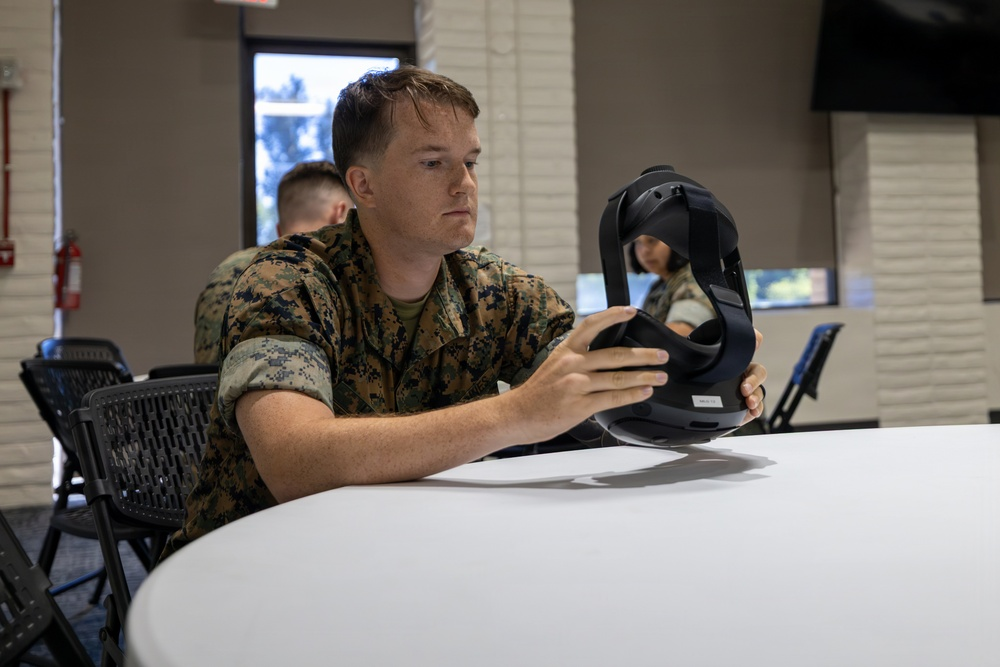

U.S. Marine Corps photo by Sgt. Mary Torres · DVIDS 10028500 · Public domain · Sgt. Daniel Light dons an HTC Vive Pro VR headset during suicide-prevention training at Camp Pendleton, Oct. 15, 2026.
USNI News
Camp Pendleton Marines turned counter-drone VR headsets into a suicide-prevention tool that has now reached 350 Marines
A 1st Marine Logistics Group battalion bought 20 OperatorXR virtual-reality sets in 2025 for $200,000 to train Marines, including supply administrators, to detect and defeat small drones. Since July the same headsets have also run a module where a trainee talks to an AI-driven Marine in crisis, built to teach active communication and suicide intervention. About 350 Marines had been through the suicide-prevention course by mid-October, and the battalion's executive officer wants at least 1,000 through it this year.
USNI News · Read source →